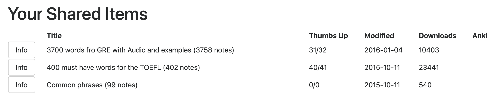

About
News
- (2024-07-04 – 2024-07-07) I visited the University of Seoul, hosted by Dohyun Kwon.
- (2024-04-14) My student in MTH 490 - Directed Study, Minh Nguyen received the "Best Presentation Award" at the 21st Math Student Conference. His presentation can be found here.
- (2024-03-27) I am honored to have received the 2023 – 2024 Postdoctoral Prize for Excellence in Teaching from the Department of Mathematics at Michigan State University.
-
(2024-03-09) I volunteered (with Olga Turanova) to lead an interactive STEM
demonstration table on "Soap Bubbles and Minimal Surfaces"
for middle school
students as part of the Girls Math and
Science Day Committee on March 9, 2024.

- (2024-01-08) I am teaching a reading course on Optimal Control Theory and Hamilton-Jacobi equation this semester with one undergraduate.
-
(2023-03-28) The Anki deck I created in 2013 to learn TOEFL has been downloaded 23441 times.
-
25835 times (updated May 27, 2024)

- 23441 times (updated Mar 28, 2023) 
- 20965 times (updated Jan 10, 2022)
-
25835 times (updated May 27, 2024)
- I visit North Carolina State University on November 6, 2023, hosted by Professor Khai Nguyen.
-
I will be giving a talk at Stinghua University on August 3, 2023.
- I will be visiting China Academy of Mathematics and Systems Science from July 26, 2023 till August 6, 2023
- I will be giving two talks at China Academy of Mathematics and Systems Science in April 2023 · [slides] · [slides]
- I will be giving a talk at Madison Workshop in PDEs in May 2023. · [website]
- I was invited to give a talk at the Applied Math seminar, UNCC on Sep 24, 2021.
- I am an instructor for Math 112 (College algebra - Summer 2021).
- I am recently awarded the GSSC Fellowship by the Graduate School, UW - Madison (Spring 2021).
- I have been awarded the Excellent in Research Award by the Mathematics Department, UW-Madison (2021).
- I have been awarded the Outstanding Teaching Assistant Award by the Mathematics Department, UW-Madison (2020).
- In May 18-21, 2020, my advisor and I will organize Madison Workshop in PDEs 2020, see madpde2020 (postponed due to Covid).
-
(2010-10-30) A book Mathematics Topics Vol. 9, High School for the Gifted, VNU-HCMC, Oct. 2010 featuring my contributions from when I was in high school (in Vietnamese, 2010).

Links
- (2024-10-01) Academic Careers: Preparing for the Market · pdf
© 2016-2024 Son N. T. Tu. Powered by Ark. Last updated: December 19, 2024.